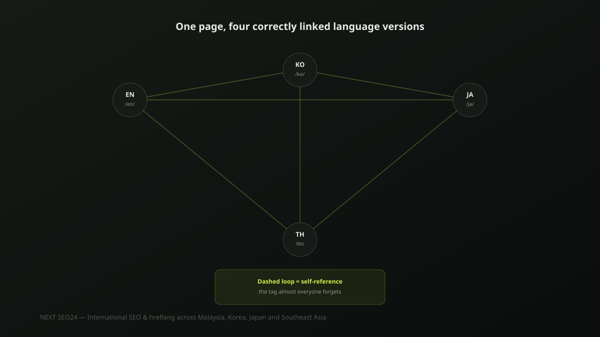

International SEO and hreflang: getting it right across Malaysia, Korea, Japan and Southeast Asia
A site with English, Korean, Japanese and Thai versions of the same pages has a specific technical problem most single-market SEO advice never covers: telling Google which version to show which searcher. Get it wrong and a Korean visitor lands on your Japanese page, or your English homepage outranks its own Korean translation in Korea. Here's how hreflang actually works, and where it silently breaks.
What hreflang is actually for
Hreflang is not a ranking factor — Google has said this directly. Its only job is helping Google understand that several URLs are different language or regional versions of the same content, so it can show the right one to the right searcher. A perfectly-ranking page is still a failure if hreflang is broken and it's shown to the wrong audience: a Malaysian Google.com.my searcher landing on the Korean-language version of your homepage isn't a ranking problem, it's a routing problem.
A working example
For a page that exists in English, Korean, Japanese and Thai, each language version needs the full set of tags — including a tag pointing to itself:
<link rel="alternate" hreflang="en" href="https://example.com/en/services/seo" />
<link rel="alternate" hreflang="ko" href="https://example.com/ko/services/seo" />
<link rel="alternate" hreflang="ja" href="https://example.com/ja/services/seo" />
<link rel="alternate" hreflang="th" href="https://example.com/th/services/seo" />
<link rel="alternate" hreflang="x-default" href="https://example.com/en/services/seo" />This exact block — all five tags — belongs on every one of the four language pages, not just one "master" version. Each page must reference itself as well as the others; that's the part almost everyone gets wrong first.
The most common bug: the missing self-reference
Every language version must include a hreflang tag pointing to itself, not just the others. Skip the self-reference on even one page and Google can discard the entire hreflang set for that page — not just fail to apply the missing tag, but ignore the whole cluster, leaving that page to compete on its own without the language signal at all. This is the single most common hreflang error we find in technical audits.
Hreflang without matching content is worse than no hreflang
Hreflang tells Google "these pages are equivalent, show the right one" — it doesn't verify that they actually are equivalent. Tagging an English page as the Korean alternate of a page that's only partially translated, or worse, not translated at all, sends a false signal that actively confuses ranking and can result in the wrong, mismatched page being shown. If a translation isn't ready yet, leave that language out of the hreflang set entirely rather than pointing it at content that doesn't match.
Subdirectories, subdomains or ccTLDs?
For most small and mid-sized multi-market businesses, subdirectories (example.com/ko/, example.com/ja/) are the practical choice — they inherit the main domain's existing authority immediately, rather than starting a subdomain or country-specific domain from zero. Separate ccTLDs (example.co.kr) can be worth the investment for a business with genuine standalone operations in that country, but for most agencies and SMEs expanding into new markets, that cost and complexity isn't justified early on.
x-default: what it's for
The x-default tag tells Google which version to show a searcher whose language or location doesn't match any of your specific alternates — a visitor from a country you don't have a dedicated version for. Point it at your default, broadest-reach version (usually English), not at a random language pick. It's a fallback, not a fifth language version competing with the others.
A pre-publish checklist
- Every language version includes a self-referencing hreflang tag, not just links to the others
- The hreflang code (
en,ko,ja,th) matches the actual language of that page's content, not a guess - Each hreflang cluster is reciprocal — if page A references page B, page B references page A back
- No hreflang tag points to a page that isn't genuinely equivalent content
x-defaultis set once per cluster, pointing at the broadest-reach version- Validated in Search Console's International Targeting report, not just eyeballed in the source code
If you're running a site across multiple markets and aren't sure your hreflang is actually working, send it over — this is a fast, concrete check to run.
Frequently asked questions
Does hreflang directly improve rankings?
No. Hreflang is not a ranking factor — Google has said this explicitly. Its only job is telling Google which language or regional version of a page to show a given searcher. Getting it wrong doesn't lower your rankings directly, but it can show a Korean searcher your Japanese page, which tanks the click-through and conversion rate even if the ranking position itself is fine.
Do I need hreflang if my site just has a language switcher with no separate URLs per language?
No, and it wouldn't work even if you added it. Hreflang requires each language version to live at its own crawlable URL. A JavaScript language switcher that swaps text on the same URL without changing it gives Google nothing to point hreflang tags at, and typically means only your default language ever gets indexed.
What's the single most common hreflang bug?
A missing or incorrect self-referencing tag — every page in a hreflang set, including the page itself, must list itself as one of its own alternates. Skip this on even one language version and Google can end up ignoring the entire hreflang set for that page, not just the missing entry.
Not sure your hreflang setup is actually working?
Send us your site — we'll check your hreflang implementation against Search Console's International Targeting report and tell you exactly what's broken.
Chat on WhatsApp →